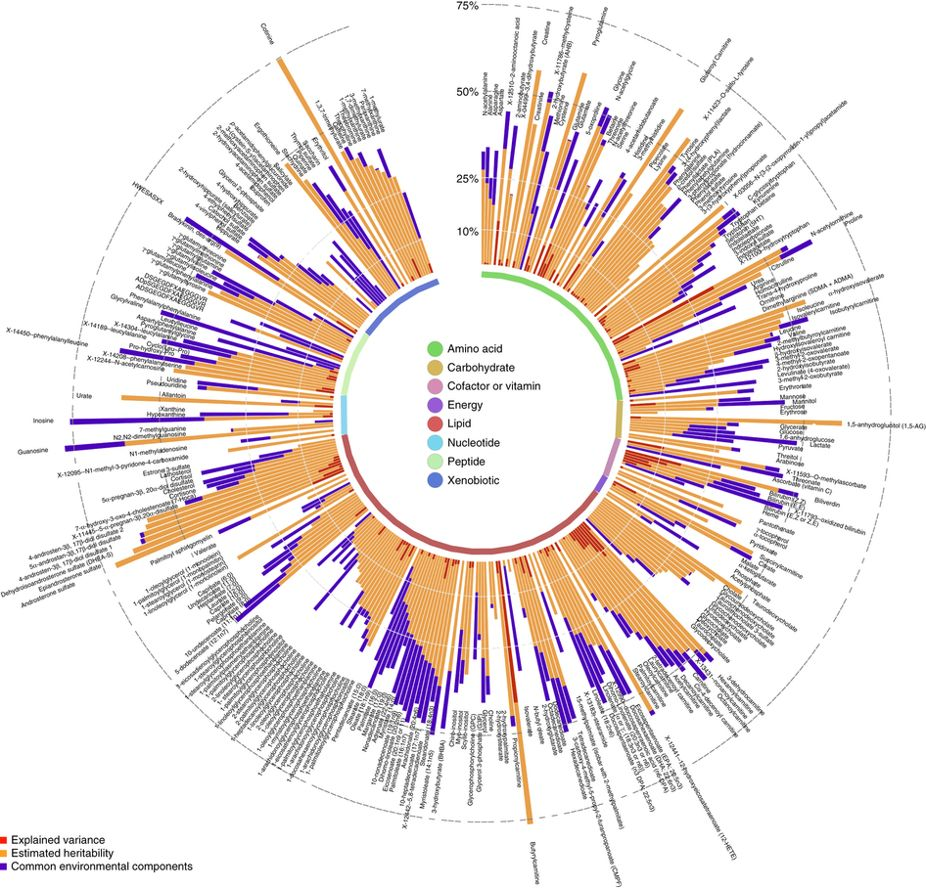
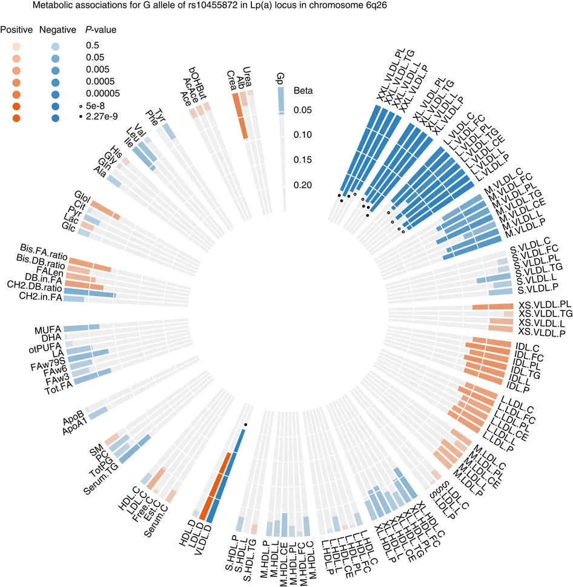
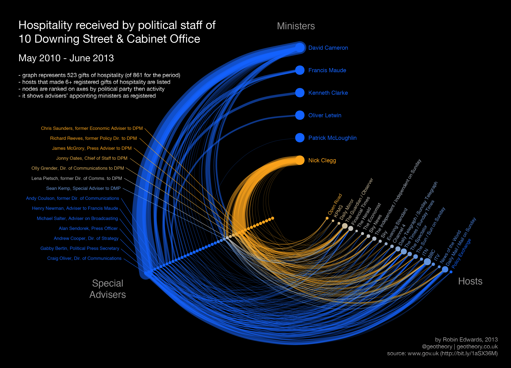

6 Data visualisation
MR Vis: a tool to visualise ‘-omic’ Mendelian randomization analyses
6.1 Asbtract
6.1.1 Objective
6.1.2 Methods
6.1.3 Results
6.1.4 Conclusion
6.1.5 Keywords
epidemiology, visualization, data-viz, omics, metabolomics
6.2 Introduction
The availability of metabolomics data in large population based cohorts such as the Avon Longitudinal Study of Parents and Children70,71 and UK Biobank72,73 has, and will continue to, enable epidemiologists to investiagte the potential roles metabolites play in health and disease76,77. However, due to the highly complex nature of metabolites (perturbations to a single metabolite do not happen in isolation) investigating individual associations with risk factors and diseases is challenging. This is particularly apparent in Mendelian randomization analyses, whereby genetic variants associated with a trait are used to proxy the trait in a statistical model54, as many metabolites share the same genetic variants78,79. MR has been described54,55 and reviewed elsewhere56,57 and a regularly updated dictionary is availablehttps://doi.org/10.31219/osf.io/6yzs7.
In large association studies, where hundreds of metabolites may be investigated as outcomes, identifying asociations that can be followed up for further analyses is challenging. Identifying associations is complicated further when introducing multiple exposures to the analysis. Additionaly, a single exposure single outcome association will be often be performed using multiple methods that all need to be compared for consistency with statistical assumptions. This is predominantly a visual task, and With large association analyses becomes less and less feasible.
A number of visualisation tools are available for epidemiologists to assess and interpret association analyses, inclduing scatter, volcano, and forest plots. However, each has its own limitations, not least the lack of available space for hundreds of variables to be included at once and in a readable form. A recent advance in this area has been the rain plot80 which enables the displaying metabolite-phenotype associations, as well as providing necessary information on individual association statistics. The rain plot is very similar to a forest plot and as such is similarly limited in its ability to vizualise many hundreds of variables at once.
One approach to circumvent these visual limitations is to present data in a circular form. Circos plots81 are routinely used in genomic studies82,83 to show vast amounts of data and have been used effectively in metabolite studies78,79 (Figure 7 and 8). Circos plots are however difficult to implement for researchers unfamilliar with Perl and similar langauges. A number of JavaScript84,https://github.com/nicgirault/circosJS, Pythonhttps://github.com/ericmjl/nxviz, and R85,https://github.com/lvulliard/BioCircos.R libraries are available however they are mostly ports of the Perl Circos implementation and are therefore designed for genomics applications.
In both Figure 7 and 8 it is possible to see the potential application of Circos plots to more complex data if one replaces the bar plot elements with point estimates and confidence intervals. Figure 7 also shows a second track coloured to show metabolite categories. It is conceivable that a second, third and even fourth track of additional association statistics could be added to this type of Circos plot allowing for comparisons across multiple variables.

Figure 7: Example of a Circos plot with a single track
Figure 7 shows an example of a Circos plot using a single track to display heritability estimates for different metabolites taken from Figure 3 Shin et al. (2014)78.

Figure 8: Example of a Circos plot with more than one track
Figure 8 shows an example of a Circos plot with multiple tracks showing metabolic associations for rs10455872. Taken from Figure 2 Kettunen et al. (2016)79.
A second approach, where one is for example interested in the association of exposure-intermediate-outcome with hundreds of variables for each, is that of hive plots86. Hive plots are used for network visualisation (Figure 9) allowing global overview of patterns of association to be identified. Hive plots are not usually used in epidemiology because of a lack of need for global overview of networks, however with larger data sets available they may provide informative oversight for large analyses87. Hive plots, like Circos plots, are implemented in Perl. They can also be created using d3.jshttps://bl.ocks.org/mbostock/2066415, and there are Pythonhttps://github.com/ericmjl/hiveplot and Rhttps://github.com/bryanhanson/HiveR libraries available.
In the example of Figure 9 you can cleary see different association patterns between the start nodes (Ministers) and their associations with intermediate nodes (Special Advisers) and end nodes (hosts). It is conceivable that similar to Figure 9 a global netwrok overview of the association between different anthropometric risk factors (start node) and metabolic intermediates (intermediate node) with disease outcomes (end node). A link could also be made from start node and end node showing the un-mediated association.

Figure 9: Example of a Hive plot
Figure 9 shows an example of a Hive plot based on UK government data on hospitality received by politicians. Figure taken from datavizproject.com (accessed: 31/10/2019).
We set out to create a Circos plot and Hive plot R package that was specific to the visualisation of large association studies of the type familiar to epidemiologists using metabolomics data. We additionally developed a web application to implement both R packages. These tools expand upon already developed tools by adapting pre-existing code for new uses and increasing the usability and application of these visualization tools.
6.3 Methods
For development of the Circos plot R package we used association results from a MR analysis of three exposures (body mass index88; BMI, waist-hip-ration89; WHR, body fat percentage90; WHR) and 123 nuclear magnetic resonance derived metabolites79.
6.4 Results
6.5 Discussion
References
54. Davey Smith, G. & Ebrahim, S. ‘Mendelian randomization’: can genetic epidemiology contribute to understanding environmental determinants of disease?*. International Journal of Epidemiology 32, 1–22 (2003).
55. Davies, N. M., Holmes, M. V. & Davey Smith, G. Reading Mendelian randomisation studies: a guide, glossary, and checklist for clinicians. BMJ 362, k601 (2018).
56. Burgess, S., Timpson, N. J., Ebrahim, S. & Davey Smith, G. Mendelian randomization: where are we now and where are we going? International Journal of Epidemiology 44, 379–388 (2015).
57. Bowden, J. & Holmes, M. V. Meta-analysis and Mendelian randomization: A review. Research Synthesis Methods 0, (2019).
70. Fraser, A. et al. Cohort Profile: the Avon Longitudinal Study of Parents and Children: ALSPAC mothers cohort. International journal of epidemiology 42, 97–110 (2013).
71. Boyd, A. et al. Cohort Profile: the ’children of the 90s’–the index offspring of the Avon Longitudinal Study of Parents and Children. International journal of epidemiology 42, 111–127 (2013).
72. Collins, R. What makes UK Biobank special? The Lancet 379, 1173–1174 (2012).
73. Allen, N. E., Sudlow, C., Peakman, T. & Collins, R. UK Biobank Data: Come and Get It. Science Translational Medicine 6, 224ed4 LP–224ed4 (2014).
76. Sampson, J. N. et al. Metabolomics in epidemiology: sources of variability in metabolite measurements and implications. Cancer epidemiology, biomarkers & prevention : a publication of the American Association for Cancer Research, cosponsored by the American Society of Preventive Oncology 22, 631–640 (2013).
77. Fearnley, L. G. & Inouye, M. Metabolomics in epidemiology: from metabolite concentrations to integrative reaction networks. International journal of epidemiology 45, 1319–1328 (2016).
78. Shin, S.-Y. et al. An atlas of genetic influences on human blood metabolites. Nature Genetics 46, 543 (2014).
79. Kettunen, J. et al. Genome-wide study for circulating metabolites identifies 62 loci and reveals novel systemic effects of LPA. Nature Communications 7, 11122 (2016).
80. Henglin, M. et al. A Single Visualization Technique for Displaying Multiple Metabolite–Phenotype Associations. 9, (2019).
81. Krzywinski, M. et al. Circos: an information aesthetic for comparative genomics. Genome research 19, 1639–1645 (2009).
82. Pavlopoulos, G. A. et al. Visualizing genome and systems biology: technologies, tools, implementation techniques and trends, past, present and future. GigaScience 4, 38 (2015).
83. Nusrat, S., Harbig, T. & Gehlenborg, N. Tasks, Techniques, and Tools for Genomic Data Visualization. Computer Graphics Forum 38, 781–805 (2019).
84. Cui, Y. et al. BioCircos.js: an interactive Circos JavaScript library for biological data visualization on web applications. Bioinformatics 32, 1740–1742 (2016).
85. Gu, Z., Gu, L., Eils, R., Schlesner, M. & Brors, B. circlize implements and enhances circular visualization in R. Bioinformatics 30, 2811–2812 (2014).
86. Krzywinski, M., Birol, I., Jones, S. J. M. & Marra, M. A. Hive plots—rational approach to visualizing networks. Briefings in Bioinformatics 13, 627–644 (2011).
87. Duke, S. P. et al. Seeing is believing: good graphic design principles for medical research. Statistics in Medicine 34, 3040–3059 (2015).
88. Yengo, L. et al. Meta-analysis of genome-wide association studies for height and body mass index in 700000 individuals of European ancestry. Human molecular genetics 27, 3641–3649 (2018).
89. Pulit, S. L. et al. Meta-analysis of genome-wide association studies for body fat distribution in 694 649 individuals of European ancestry. Human molecular genetics 28, 166–174 (2019).
90. Lu, Y. et al. New loci for body fat percentage reveal link between adiposity and cardiometabolic disease risk. Nature Communications 7, 10495 (2016).